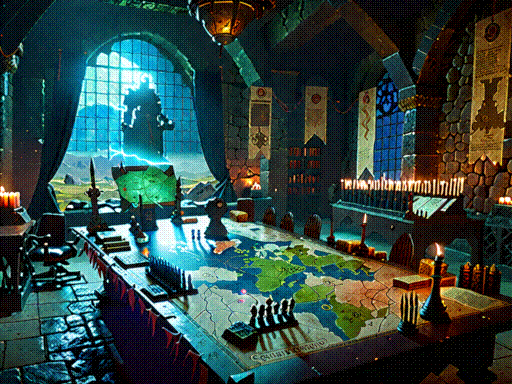

Bastion
the rules
Quick Overview
In Bastion, you build a compact yet powerful 50-card deck accompanied by
a champion, relic, and pact, which reside in the Bastion. These special
spells allow you to tailor your deck towards a specific strategy and
provide unique tactical options. The game is designed to be a fast-paced
experience, with a focus on the interplay between your bastion spells and
your deck.
Bastion Mechanics
The Bastion is a special zone aside from your deck that houses your
Champion, Relic, and Pact. These spells are not directly part of your
library but are instead available to you from the start of the game.
Through casting your Bastion spells, you can shape the course of the
battle and gain a strategic edge over your opponent. However, each time a
Bastion piece is cast from the Bastion, their costs increase, forcing you
to carefully consider the timing and order of your plays in order to
maximize their impact.
Bastion Pieces
-
Champion: A legendary creature that leads your deck
into battle, allowing you to build around its unique abilities or use it
as a standalone threat.
-
Relic: An artifact that supports your deck with its passive
effects or activated abilities, synergizing with your deck.
-
Pact: An enchantment that offers a powerful effect or
ongoing advantage, shaping the battlefield to your advantage.
Your Relic and Pact may also be creatures.
Unified Tax
-
Starting Tax: The unified tax for casting Bastion
spells from the Bastion starts out at 0.
-
Casting from Bastion: When you decide to cast your
Champion, Relic, or Pact from the Bastion, you must pay its base cost
and additionally the current unified tax (as colorless mana).
-
Tax Increase: Each time any of your Bastion spells
leave the Bastion, the unified tax increases by 1 for all future casts.
This cumulative tax forces you to think carefully about the order and
timing of your plays.
Tax Example
Let's assume you cast your Champion first. As the current tax is 0, you
only pay its base cost, and increase the tax to 1. The next time you cast
any Bastion spell - be it your Relic or Pact - you'll need to pay its base
cost plus 1, then the tax increases to 2 for the subsequent cast.
This incremental cost continues to rise with each cast from the Bastion,
ensuring that even low-cost spells must be cast with care.
Recasting
If your Champion, Relic, or Pact would be put into the graveyard or be
exiled, you may instead choose to return it to the Bastion. This allows
you to recast your Bastion spells, but at an increased cost due to the
unified tax.
Deck Construction
-
Deck Size: Your deck consists of 50 cards (singleton,
aside from basic lands), including the Bastion spells.
-
Color Identity: The color identity of your deck is
determined by the combined color identities of your Champion, Relic, and
Pact. Every card in your deck must conform to this union.
To Long Didn't Read
-
Deck Size: Your deck consists of 50 cards, including
the Bastion spells.
-
Color Identity: Your deck's color identity is
determined by the combined color identities of your Champion, Relic, and
Pact.
-
Bastion: Your Champion (legendary creature), Relic
(artifact), and Pact (enchantment) all start the game in the Bastion.
-
Unified Tax: Every time a spell is cast
from the Bastion, the unified tax increases by 1 for all subsequent
casts.
-
Recasting: If your Bastion spells would be put
into the graveyard or be exiled, you may instead return them to the
Bastion.
-
Starting Life: Each player begins the game with 20
life.